## Log of the Effect-sizes
rust1 <- rust1 %>%
mutate(
log_sev = log(sev),
log_yld = log(yld))
hist_log_sev <- ggplot(rust1, aes(log_sev)) +
geom_histogram(bin = 10, fill = "steelblue", color = "white") +
theme_minimal_hgrid() +
scale_y_continuous(breaks = c(0, 500, 1000, 1500), limits = c(0, 1500)) +
xlab("log(SBR severity)")
hist_sev <- ggplot(rust1, aes(sev)) +
geom_histogram(bin = 10, fill = "steelblue", color = "white") +
theme_minimal_hgrid() +
xlab("SBR Severity (%)")
hist_yld <- ggplot(rust1, aes(yld)) +
geom_histogram(bin = 10,fill = "steelblue", color = "white") +
theme_minimal_hgrid() +
xlab("Yield (Kg/ha)")
library(cowplot)
hist_plot <- plot_grid(hist_sev, hist_log_sev, hist_yld, labels = c("A", "B", "C"), nrow = 3, align = "V")## `stat_bin()` using `bins = 30`. Pick better value with `binwidth`.
## `stat_bin()` using `bins = 30`. Pick better value with `binwidth`.
## `stat_bin()` using `bins = 30`. Pick better value with `binwidth`.hist_plot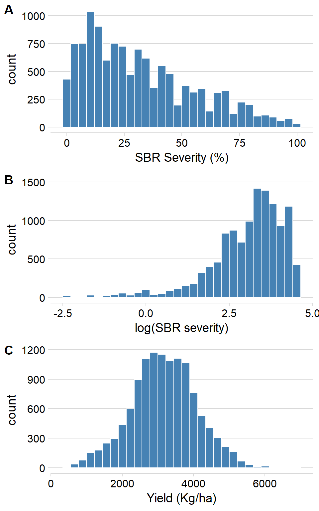
ggsave("Figures/histograms.png", width = 6, height = 9, dpi = 600)library(tidyverse)
rust_sev <- read_csv("data/dat-sev.csv")
rust_sev <- rust_sev %>%
mutate(region = case_when(
state == "MT" ~ "NW",
state == "BA" ~ "NW",
state == "DF" ~ "NW",
state == "MS" ~ "NW",
state == "GO" ~ "NW",
state == "TO" ~ "NW",
state == "PR" ~ "SE",
state == "MG" ~ "NW",
state == "SP" ~ "SE",
state == "RS" ~ "SE"))
library(plyr)
rust_sev$brand_name <- revalue(rust_sev$brand_name, c("AACHECK" = "CHECK"))
detach("package:plyr", unload = TRUE)
rust_sev <- rust_sev
rust_sev$brand_name <- factor(rust_sev$brand_name, levels = c("CHECK", "BIXF + TFLX + PROT", "PICO + BENZ", "PYRA + EPOX + FLUX", "AZOX + BENZ", "TFLX + PROT","PICO + TEBU", "TFLX + CYPR", "PICO + CYPR"))
box_region_sev = rust_sev %>%
filter(brand_name == "CHECK") %>%
ggplot(aes(factor(region), sev_check)) +
geom_jitter(width = 0.15, size = 2, color = "gray85", alpha = 1) +
geom_boxplot(size = 1, outlier.shape = NA, fill = NA, color = "#E05313", width = 0.5) +
theme_minimal_hgrid(font_size = 10)+
labs(x = "Region", y = "SBR severity (%) in the CHECK") +
scale_y_continuous(breaks = c(0,20,40,60,80,100), limits = c(0,100))+
theme(axis.title.x = element_blank(),
axis.text.x = element_blank(),
axis.title.y = element_text(size=12, face = "bold"),
panel.border = element_rect(color = "gray60", size=1)
# axis.text.y = element_text(size=12),
# axis.title.y = element_text(size=14, face = "bold")
)
box_region_sev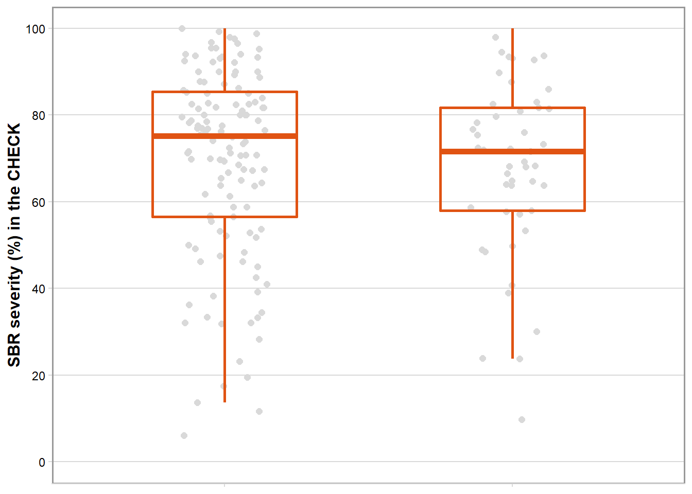
box_sev <- ggplot(rust_sev, aes(brand_name, mean_sev)) +
geom_jitter(width = 0.15, size = 2, color = "gray85", alpha = 1) +
geom_boxplot(size = 1, outlier.shape = NA, fill = NA, color = "#E05313", width = 0.5) +
theme_minimal_hgrid(font_size = 10)+
labs(x = "Fungicide", y = "SBR Severity (%)") +
scale_y_continuous(breaks = c(0,20,40,60,80,100), limits = c(0,100))+
theme(axis.title.x = element_blank(),
axis.text.x = element_blank(),
axis.title.y = element_text(size=12, face = "bold"),
panel.border = element_rect(color = "gray60", size=1)
# axis.text.y = element_text(size=12),
# axis.title.y = element_text(size=14, face = "bold")
)
box_sev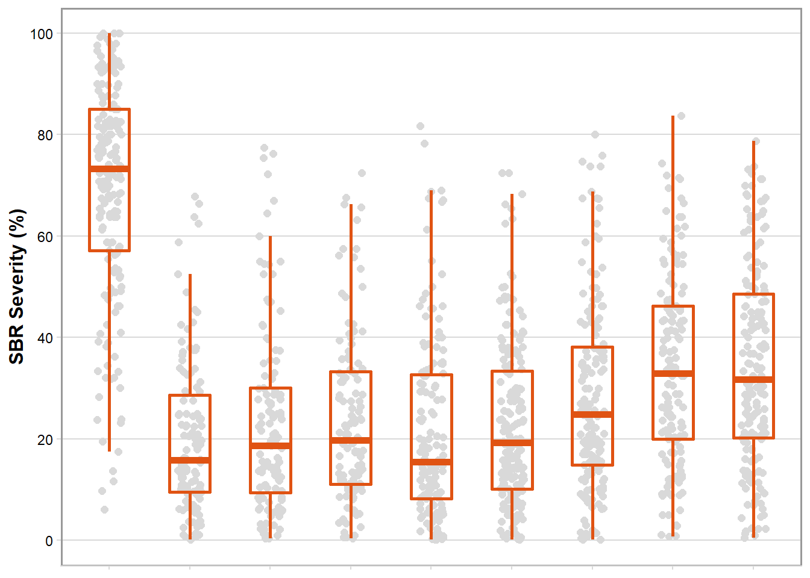
sev_year <- rust_sev %>%
filter(brand_name == "CHECK") %>%
ggplot(aes(factor(year), sev_check)) +
geom_jitter(width = 0.15, size = 2, color = "gray85", alpha = 1) +
geom_boxplot(size = 1, outlier.shape = NA, fill = NA, color = "#E05313", width = 0.5) +
theme_minimal_hgrid(font_size = 10)+
labs(x = "Harvest Season", y = "") +
scale_y_continuous(breaks = c(0,20,40,60,80,100), limits = c(0,100))+
theme(axis.title.x = element_blank(),
axis.text.x = element_blank(),
axis.text.y = element_text(color = NA, size = 4),
axis.title.y = element_blank(),
panel.border = element_rect(color = "gray60", size=1)
# axis.text.y = element_text(size=12),
# axis.title.y = element_text(size=14, face = "bold")
)
sev_year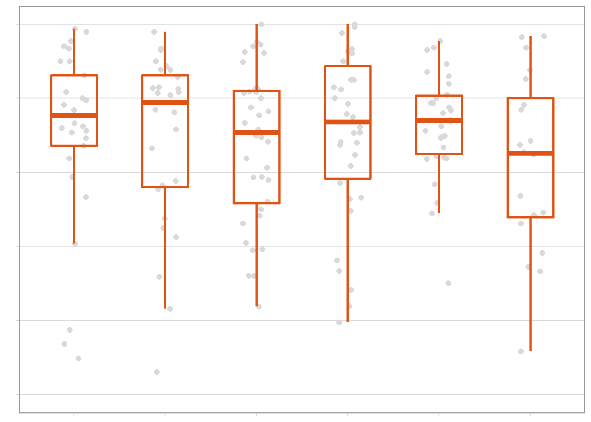
library(tidyverse)
rust_yld <- read_csv("data/dat-yld.csv")
rust_yld = rust_yld %>%
mutate(region = case_when(
state == "MT" ~ "NW",
state == "BA" ~ "NW",
state == "DF" ~ "NW",
state == "MS" ~ "NW",
state == "GO" ~ "NW",
state == "TO" ~ "NW",
state == "PR" ~ "SE",
state == "MG" ~ "NW",
state == "SP" ~ "SE",
state == "RS" ~ "SE"))
library(plyr)
rust_yld$brand_name <- revalue(rust_yld$brand_name, c("AACHECK" = "CHECK"))
detach("package:plyr", unload = TRUE)
rust_yld <- rust_yld
rust_yld$brand_name <- factor(rust_yld$brand_name, levels = c("CHECK", "BIXF + TFLX + PROT", "PICO + BENZ", "PYRA + EPOX + FLUX", "AZOX + BENZ", "TFLX + PROT","PICO + TEBU", "TFLX + CYPR", "PICO + CYPR"))
box_region_yld = rust_yld %>%
filter(brand_name == "CHECK") %>%
ggplot(aes(factor(region), yld_check)) +
geom_jitter(width = 0.15, size = 2, color = "gray85", alpha = 1) +
geom_boxplot(size = 1, outlier.shape = NA, fill = NA, color = "#4D1C06", width = 0.5) +
theme_minimal_hgrid(font_size = 10)+
labs(x = "Region", y = "Yield (kg/ha) in the CHECK") +
scale_y_continuous(breaks = c(0,1000,2000,3000,4000,5000), limits = c(0, 5000))+
theme(axis.text.x = element_text(angle = 45, hjust = 1, size=12),
axis.title.x = element_text(size=12, face = "bold"),
axis.title.y = element_text(size=12, face = "bold"),
panel.border = element_rect(color = "gray60", size=1)
# axis.text.y = element_text(size=12),
# axis.title = element_text(size=14, face = "bold")
)
box_region_yld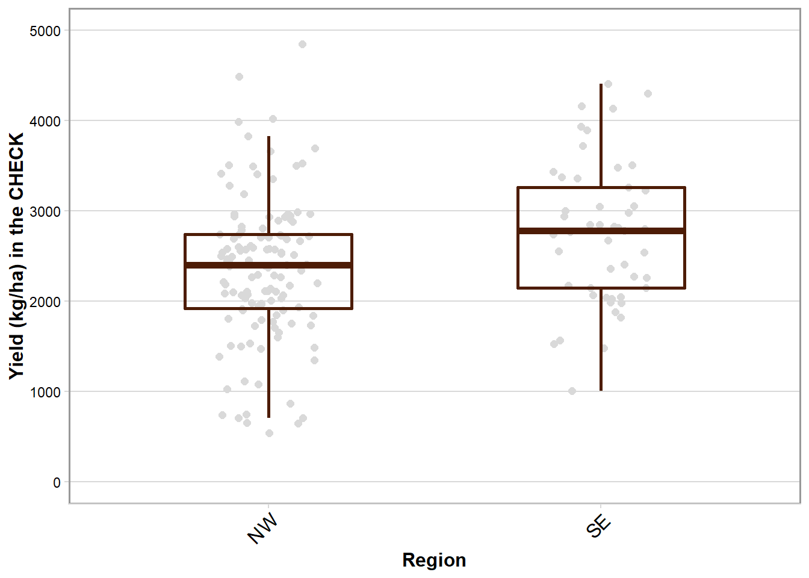
box_yld <- ggplot(rust_yld, aes(brand_name, mean_yld)) +
geom_jitter(width = 0.15, size = 2, color = "gray85", alpha = 1) +
geom_boxplot(size = 1, outlier.shape = NA, fill = NA, color = "#4D1C06", width = 0.5) +
theme_minimal_hgrid(font_size = 10)+
labs(x = "Fungicide", y = "Yield (kg/ha)") +
scale_y_continuous(breaks = c(0,1000,2000,3000,4000,5000), limits = c(0, 5000))+
theme(axis.text.x = element_text(angle = 45, hjust = 1, size=12),
axis.title.x = element_text(size=12, face = "bold"),
axis.title.y = element_text(size=12, face = "bold"),
panel.border = element_rect(color = "gray60", size=1)
# axis.text.y = element_text(size=12),
# axis.title = element_text(size=14, face = "bold")
)
box_yld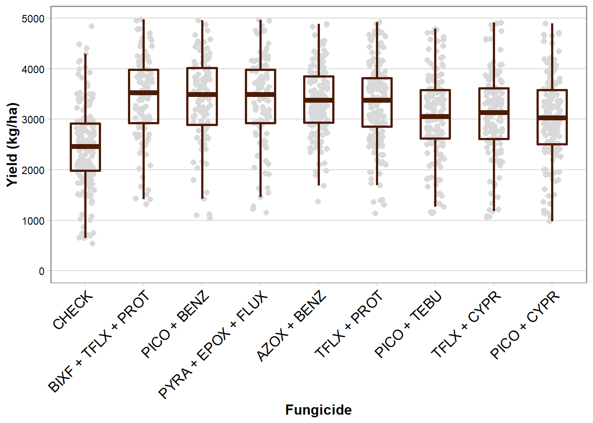
yld_year <- rust_yld %>%
filter(brand_name == "CHECK") %>%
ggplot(aes(factor(year), yld_check)) +
geom_jitter(width = 0.15, size = 2, color = "gray85", alpha = 1) +
geom_boxplot(size = 1, outlier.shape = NA, fill = NA, color = "#4D1C06", width = 0.5) +
theme_minimal_hgrid(font_size = 10)+
labs(x = "Harvest Season", y = "") +
scale_y_continuous(breaks = c(0,1000,2000,3000,4000,5000), limits = c(0, 5000))+
theme(axis.text.x = element_text(angle = 45, hjust = 1, size=12),
axis.title.x = element_text(size=12, face = "bold"),
axis.title.y = element_blank(),
axis.text.y = element_text(color = NA,size = 4),
panel.border = element_rect(color = "gray60", size=1)
# axis.text.y = element_text(size=12),
# axis.title = element_text(size=14, face = "bold")
)
yld_year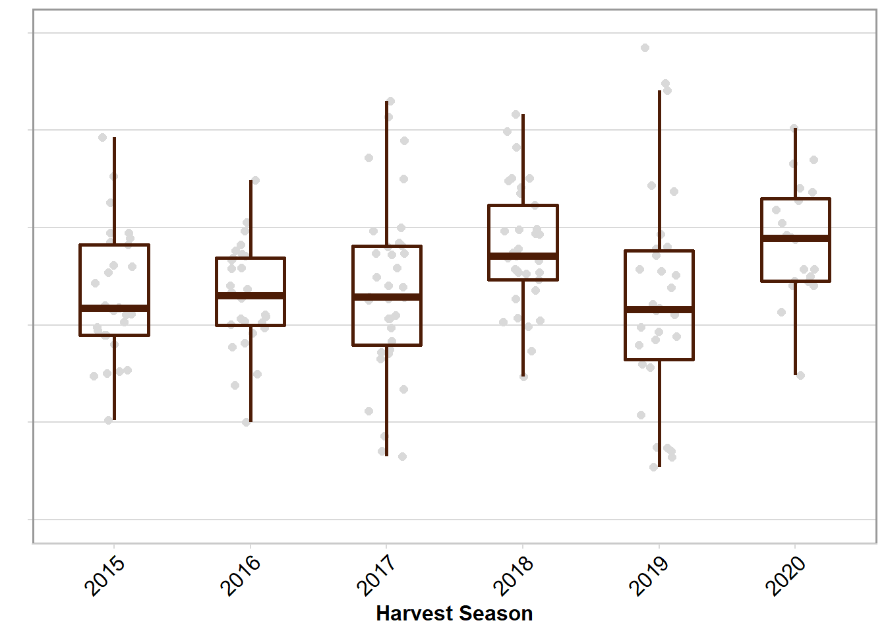
library(patchwork)##
## Attaching package: 'patchwork'## The following object is masked from 'package:cowplot':
##
## align_plotsbox_sev + box_region_sev + sev_year +
box_yld+ box_region_yld + yld_year +
plot_layout(heights = c(1, 1),
widths = c(1,.3,.7))+
plot_annotation(tag_levels = 'A') &
theme(panel.border = element_blank())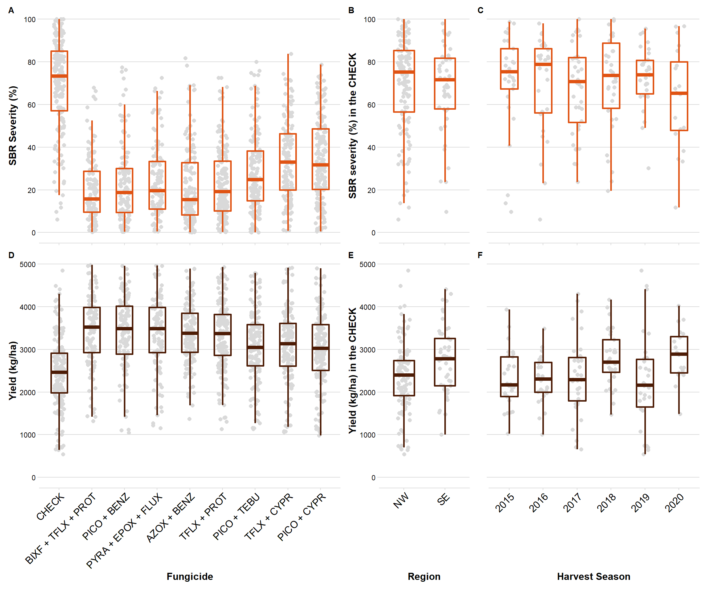
ggsave("Figures/Combo_BOX.png", width = 10, height = 8, dpi = 600)library(cowplot)
library(ggrepel)
library(tidyverse)
library(here)## here() starts at C:/Users/User/Google Drive/Jhonatan-Barro/Dados-ferrugem-soja-CAF/paper-NMA-2015-2020/R-codesyld = read_excel(here("data","yld_kg.xlsx"))
sev = read_excel(here("data","efficacy_sev.xlsx"))
gain = full_join(sev, yld, by = "fungicide")
gain$fungicide <- factor(gain$fungicide, levels = c("BIXF + TFLX + PROT", "PICO + BENZ", "PYRA + EPOX + FLUX", "AZOX + BENZ", "TFLX + PROT","PICO + TEBU", "TFLX + CYPR", "PICO + CYPR"))
gain %>%
ggplot(aes(efficacy, yld)) +
geom_errorbar(aes(ymin = yld_lower, ymax = yld_upper, color = fungicide), alpha = 0.8, width=0, size= 0.8)+
geom_errorbarh(aes(xmin = efficacy_lw, xmax = efficacy_up, color = fungicide), alpha = 0.8, height= 0, size= 0.8)+
geom_point(aes(efficacy, yld, color = fungicide), size = 3)+
scale_y_continuous(breaks=c(400,600,800,1000,1200), limits=c(400,1200))+
scale_x_continuous(breaks=c(50,60,70,80), limits=c(50,80))+
theme_minimal_grid()+
scale_color_calc()+
labs(y = "Yield response (kg/ha)", x = "Efficacy (%)", color = "Fungicide")+
theme(axis.text=element_text(size=12),
axis.title=element_text(size=14, face = "bold"),
legend.position = "right",
legend.title.align = 0.5,
legend.title = element_text(size=12, face = "bold"))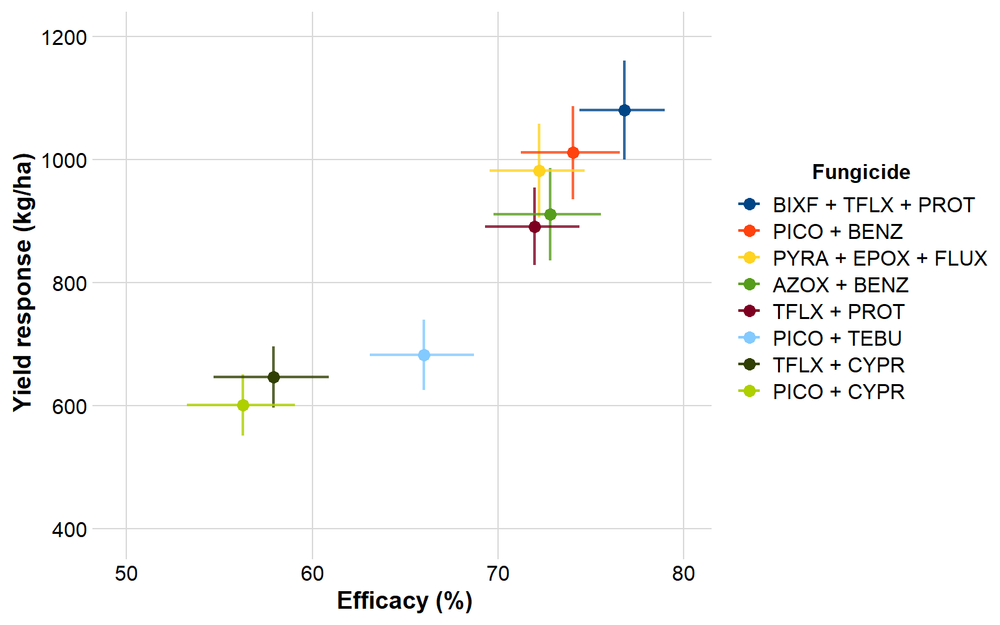
ggsave("Figures/sev_yld.png", width = 8, height = 5, dpi = 600)library(here)
dec_efficacy = read_excel("data/predicted_efficacy.xlsx")
library(tidyverse)
rust_sev <- read_csv("data/dat-sev.csv")##
## -- Column specification --------------------------------------------------------
## cols(
## study = col_double(),
## year = col_double(),
## location = col_character(),
## state = col_character(),
## n_spray = col_double(),
## brand_name = col_character(),
## mean_sev = col_double(),
## mean_yld = col_double(),
## v_sev = col_double(),
## v_yld = col_double(),
## yld_check = col_double(),
## v_yld_check = col_double(),
## sev_check = col_double(),
## v_sev_check = col_double(),
## log_sev = col_double(),
## vi_sev = col_double(),
## n2 = col_double(),
## n3 = col_double(),
## design = col_double()
## )sbr_effic <- rust_sev %>%
mutate(efficacy = (1-(mean_sev/sev_check))) %>%
mutate(efficacy1 = efficacy*100) %>%
filter(brand_name!= "AACHECK")
sbr_effic <- sbr_effic %>%
mutate(region = case_when(
state == "MT" ~ "North",
state == "BA" ~ "North",
state == "DF" ~ "North",
state == "MS" ~ "North",
state == "GO" ~ "North",
state == "TO" ~ "North",
state == "PR" ~ "South",
state == "MG" ~ "North",
state == "SP" ~ "South",
state == "RS" ~ "South"))
dec_efficacy %>%
mutate(brand_name = factor(brand_name, levels = c("BIXF + TFLX + PROT", "PICO + BENZ", "PYRA + EPOX + FLUX", "AZOX + BENZ", "TFLX + PROT","PICO + TEBU", "TFLX + CYPR", "PICO + CYPR"))) %>%
ggplot()+
geom_jitter(data = sbr_effic, aes(year, efficacy*100, size = vi_sev, color = region), alpha= 0.13, width = .2)+
geom_line(data = dec_efficacy, aes(year, mean_efficacy), size = 1.7, color = "#E05313")+
geom_line(data = dec_efficacy, aes(year, CIL), linetype="dashed", size = 1, alpha = 1)+
geom_line(data = dec_efficacy, aes(year, CIU), linetype="dashed", size = 1, alpha = 1)+
theme_minimal_hgrid(font_size = 10)+
scale_size_continuous(range = c(3,10), breaks = c(1,10,100))+
scale_color_manual(values=c("steelblue", "#009628"),
name = "Region",
breaks=c("North", "South"),
labels=c("NW", "SE"))+
guides(color = guide_legend(override.aes = list(size=2.5)))+
theme(legend.position = "top",
legend.justification = "top",
legend.direction = "horizontal",
legend.key.height = unit(1, "cm"),
legend.title = element_text(size = 12, face = "bold"),
legend.text = element_text(size = 12),
panel.grid = element_blank(),
axis.text.x = element_text(size = 10),
axis.text.y = element_text(size = 10),
axis.title.x = element_text(size=14, face = "bold"),
axis.title.y = element_text(size=14, face = "bold"),
strip.text = element_text(size = 12, color = "black"),
strip.background = element_rect(colour="white", fill="white"),
panel.border = element_rect(color = "gray60", size=1))+
scale_x_continuous(breaks=c(2015, 2016, 2017, 2018, 2019, 2020), limits=c(2015,2020))+
labs(y = "Efficacy (%)", x = "Crop Season", color = "Region", size = "Sampling Variance")+
facet_wrap(~factor(brand_name), ncol = 2)+
coord_cartesian(ylim=c(0,100))+
labs(y = "Efficacy (%)", x = "Harvest Season", size = "Sampling Variance", color = "Region")## Warning: Removed 124 rows containing missing values (geom_point).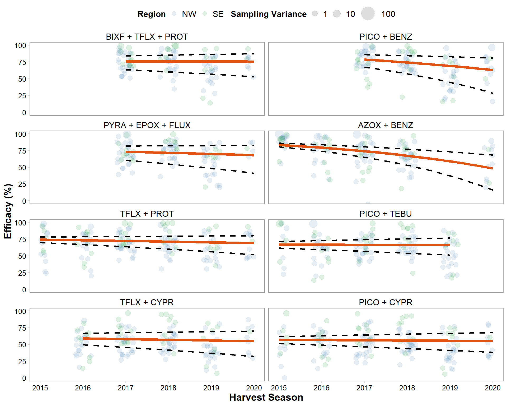
ggsave("Figures/decline_efficacy.png", width = 8, height = 10, dpi = 600)## Warning: Removed 124 rows containing missing values (geom_point).library(cowplot)
dec_yld = read_excel("data/predicted_yield.xlsx")
rust_yld <- read_csv("data/dat-yld.csv")##
## -- Column specification --------------------------------------------------------
## cols(
## study = col_double(),
## year = col_double(),
## location = col_character(),
## state = col_character(),
## n_spray = col_double(),
## brand_name = col_character(),
## mean_sev = col_double(),
## mean_yld = col_double(),
## v_sev = col_double(),
## v_yld = col_double(),
## yld_check = col_double(),
## v_yld_check = col_double(),
## sev_check = col_double(),
## v_sev_check = col_double(),
## vi_yld = col_double(),
## n2 = col_double(),
## n3 = col_double(),
## design = col_double()
## )yld_gain <- rust_yld %>%
mutate(gain = mean_yld - yld_check) %>%
filter(brand_name!= "AACHECK")
yld_gain <- yld_gain %>%
mutate(region = case_when(
state == "MT" ~ "North",
state == "BA" ~ "North",
state == "DF" ~ "North",
state == "MS" ~ "North",
state == "GO" ~ "North",
state == "TO" ~ "North",
state == "PR" ~ "South",
state == "MG" ~ "North",
state == "SP" ~ "South",
state == "RS" ~ "South"))
dec_yld %>%
mutate(brand_name = factor(brand_name, levels = c("BIXF + TFLX + PROT", "PICO + BENZ", "PYRA + EPOX + FLUX", "AZOX + BENZ", "TFLX + PROT","PICO + TEBU", "TFLX + CYPR", "PICO + CYPR"))) %>%
ggplot()+
geom_jitter(data = yld_gain, aes(year, gain, size = vi_yld, color = region), alpha= 0.13, width = 0.2)+
geom_line(data = dec_yld, aes(year, mean_gain), size = 1.7, color = "#4D1C06")+
geom_line(data = dec_yld, aes(year, CIL), linetype="dashed", size = 1, alpha = 1)+
geom_line(data = dec_yld, aes(year, CIU), linetype="dashed", size =1, alpha = 1)+
theme_minimal_hgrid(font_size = 10)+
scale_color_manual(values=c("steelblue", "#009628"),
name = "Region",
breaks=c("North", "South"),
labels=c("NW", "SE"))+
scale_size_continuous(range = c(.01,5))+
scale_size_continuous(range = c(.5,8), breaks = c(600,6000,60000))+
guides(color = guide_legend(override.aes = list(size=2.5)))+
theme(legend.position = "top",
legend.justification = "top",
legend.direction = "horizontal",
legend.key.height = unit(1, "cm"),
legend.title = element_text(size = 12, face = "bold"),
legend.text = element_text(size = 12),
panel.grid = element_blank(),
axis.text.x = element_text(size = 10),
axis.text.y = element_text(size = 10),
axis.title.x = element_text(size=14, face = "bold"),
axis.title.y = element_text(size=14, face = "bold"),
strip.text = element_text(size = 12, color = "black"),
strip.background = element_rect(colour="white", fill="white"),
panel.border = element_rect(color = "gray60", size=1))+
scale_x_continuous(breaks=c(2015, 2016, 2017, 2018, 2019, 2020), limits=c(2015,2020))+
labs(y = "Yield response (kg/ha)", x = "Harvest Season", color = "Region", size = "Sampling Variance")+
ylim(0,3000)+
facet_wrap(~factor(brand_name), ncol = 2)## Scale for 'size' is already present. Adding another scale for 'size', which
## will replace the existing scale.## Warning: Removed 137 rows containing missing values (geom_point).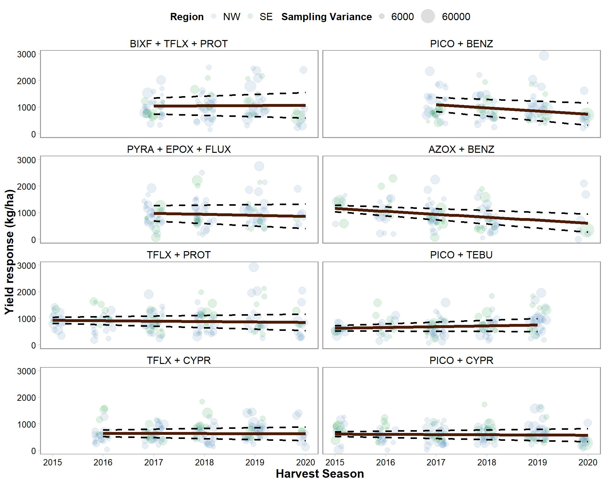
ggsave("Figures/decline_yield.png", width = 8, height = 10, dpi = 600)## Warning: Removed 137 rows containing missing values (geom_point).library(cowplot)
library(tidyverse)
library(here)
yld_region = read_excel(here("data","yld_region.xlsx"))
names(yld_region) = c("fungicide", "region", "yld", "yld_lw", "yld_upp")
yld_overall = read_excel(here("data","yld_kg.xlsx")) %>%
mutate(region = rep("Overall", length(fungicide)))
names(yld_overall) = c("yld", "yld_lw", "yld_upp", "fungicide", "region")
yld = rbind(yld_overall, yld_region)
efficacy_region = read_excel(here("data","eff_region.xlsx"))
names(efficacy_region) = c("fungicide", "region", "efficacy", "eff_lw", "eff_upp")
sev = read_excel(here("data","efficacy_sev.xlsx")) %>%
mutate(region = rep("Overall", length(fungicide)))
names(sev) = c("efficacy", "eff_lw", "eff_upp", "fungicide", "region")
efficacy = rbind(sev, efficacy_region)
gain1 = left_join(efficacy, yld) %>%
filter(region != "Overall") %>%
mutate(sig = case_when(
fungicide == "BIXF + TFLX + PROT" ~ "sig",
fungicide == "PICO + CYPR" ~ "sig",
fungicide == "PICO + TEBU" ~ "sig",
fungicide == "TFLX + CYPR" ~ "sig",
fungicide == "TFLX + PROT" ~ "sig",
fungicide == "AZOX + BENZ" ~ "ns",
fungicide == "PICO + BENZ" ~ "ns",
fungicide == "PYRA + EPOX + FLUX" ~ "ns",
))## Joining, by = c("fungicide", "region")g1 = gain1 %>%
mutate(fungicide = factor(fungicide, levels = c("PICO + CYPR", "TFLX + CYPR", "PICO + TEBU", "TFLX + PROT", "AZOX + BENZ", "PYRA + EPOX + FLUX", "PICO + BENZ", "BIXF + TFLX + PROT"))) %>%
mutate(region = factor(region, levels = c("South","North"))) %>%
ggplot(aes(fungicide, efficacy)) +
geom_errorbar(aes(ymin = eff_lw,ymax = eff_upp, color = region, shape = sig), width = 0, size = 1, position = position_dodge(0.3))+
labs(y = "Efficacy (%)", x = "Fungicide", color = "Region", shape = "")+
scale_y_continuous(breaks=c(50,60,70,80,90,100))+
geom_point(aes(fungicide, efficacy, color = region), position = position_dodge(0.3), size = 3.5) +
geom_point(aes(x =fungicide, y = 90, shape = sig), size = 6, color = "red")+
theme_minimal_grid()+
theme(axis.text=element_text(size=10),
legend.justification = "center",
axis.title=element_text(size=10, face = "bold"),
legend.position = "top",
panel.border = element_rect(color = "gray60", size=1),
legend.title = element_text(size = 10, face = "bold"),
legend.text = element_text(size = 10, face = "italic"))+
scale_color_manual(values=c("steelblue", "#009628"),
name = "Region",
breaks=c("North", "South"),
labels=c("NW", "SE"))+
# scale_shape_manual(values = c(1,16),
# labels=c("P > 0.05", "P \u2264 0.05"))+
scale_shape_manual(values = c(" ","*"),
labels=c("", "P \u2264 0.05"))+
coord_fixed()+
coord_flip()## Warning: Ignoring unknown aesthetics: shape## Coordinate system already present. Adding new coordinate system, which will replace the existing one.gain2 = left_join(efficacy, yld) %>%
filter(region != "Overall") %>%
mutate(sig = case_when(
fungicide == "BIXF + TFLX + PROT" ~ "ns",
fungicide == "PICO + CYPR" ~ "sig",
fungicide == "PICO + TEBU" ~ "sig",
fungicide == "TFLX + CYPR" ~ "sig",
fungicide == "TFLX + PROT" ~ "sig",
fungicide == "AZOX + BENZ" ~ "ns",
fungicide == "PICO + BENZ" ~ "ns",
fungicide == "PYRA + EPOX + FLUX" ~ "ns",
))## Joining, by = c("fungicide", "region")g2 = gain2 %>%
mutate(fungicide = factor(fungicide, levels = c("PICO + CYPR", "TFLX + CYPR", "PICO + TEBU", "TFLX + PROT", "AZOX + BENZ", "PYRA + EPOX + FLUX", "PICO + BENZ", "BIXF + TFLX + PROT"))) %>%
mutate(region = factor(region, levels = c("South","North"))) %>%
ggplot(aes(fungicide, yld)) +
geom_errorbar(aes(ymin = yld_lw, ymax = yld_upp, color = region, shape = sig), width = 0, size = 1, position = position_dodge(0.3))+
labs(y = "Yield response (kg/ha)", x = "Fungicide", color = "Region", shape = "")+
scale_y_continuous(breaks=c(500,750,1000,1250))+
geom_point(aes(fungicide, yld, color = region), position = position_dodge(0.3), size = 3.5) +
geom_point(aes(x =fungicide, y = 1400, shape = sig), size = 6, color = "red")+
theme_minimal_grid()+
theme(axis.title.x= element_text(size=10, face = "bold"),
axis.text.x=element_text(size=10),
axis.title.y = element_blank(),
axis.text.y = element_blank(),
panel.border = element_rect(color = "gray60", size=1),
legend.position = "top",
legend.title = element_text(size = 10, face = "bold"),
legend.text = element_text(size = 10, face = "italic"))+
scale_color_manual(values=c("steelblue", "#009628"),
name = "Region",
breaks=c("North", "South"),
labels=c("NW", "SE"))+
# scale_shape_manual(values = c(1,16),
# labels=c("P > 0.05", "P \u2264 0.05"))+
scale_shape_manual(values = c(" ","*"),
labels=c("", "P \u2264 0.05"))+
coord_fixed()+
coord_flip()## Warning: Ignoring unknown aesthetics: shape## Coordinate system already present. Adding new coordinate system, which will replace the existing one.library(patchwork)
g1 + g2 + plot_layout(guides = "collect") & theme(legend.position = "top")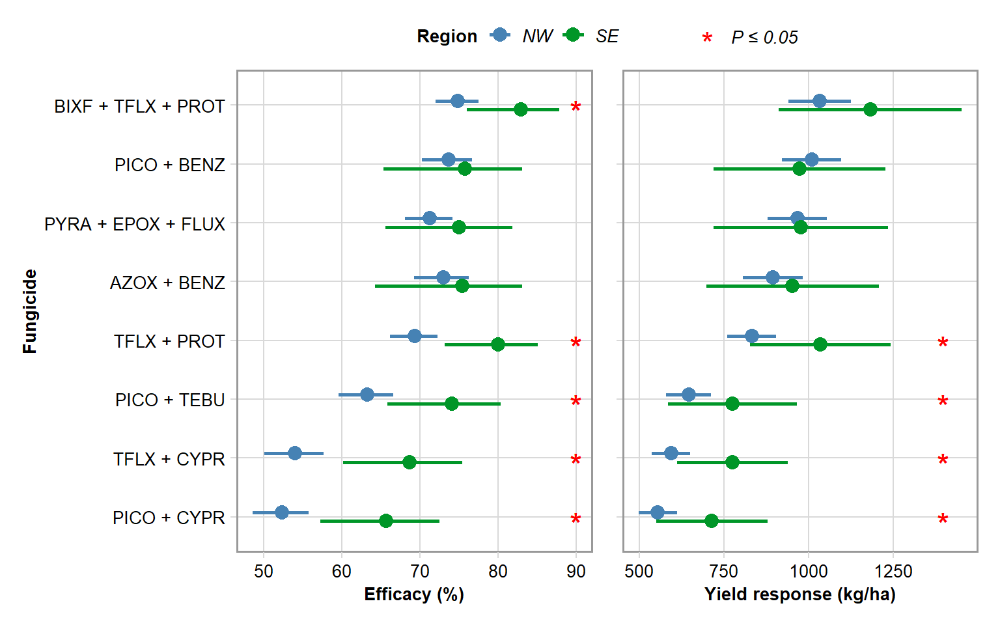
ggsave("Figures/region.png", height=5, width=8, dpi = 600)library(gsheet)
library(janitor)##
## Attaching package: 'janitor'## The following objects are masked from 'package:stats':
##
## chisq.test, fisher.testcoord <- gsheet2tbl("https://docs.google.com/spreadsheets/d/1Xx_gK6ERLLhQGIrOPB_ZYs9LoHTmsv030s30Dc_TPzg/edit#gid=1130774788", sheetid = "map")
library(tidyverse)
rust_sev <- read_csv("data/dat-sev.csv")##
## -- Column specification --------------------------------------------------------
## cols(
## study = col_double(),
## year = col_double(),
## location = col_character(),
## state = col_character(),
## n_spray = col_double(),
## brand_name = col_character(),
## mean_sev = col_double(),
## mean_yld = col_double(),
## v_sev = col_double(),
## v_yld = col_double(),
## yld_check = col_double(),
## v_yld_check = col_double(),
## sev_check = col_double(),
## v_sev_check = col_double(),
## log_sev = col_double(),
## vi_sev = col_double(),
## n2 = col_double(),
## n3 = col_double(),
## design = col_double()
## )sbr_effic <- rust_sev %>%
group_by(location, state, brand_name) %>%
summarise(efficacy = (1-(mean_sev/sev_check))*100,
vi_sev = mean(vi_sev)) %>%
group_by(location, state, brand_name) %>%
summarise(efficacy = mean(efficacy),
vi_sev = mean(vi_sev))## `summarise()` regrouping output by 'location', 'state', 'brand_name' (override with `.groups` argument)## `summarise()` regrouping output by 'location', 'state' (override with `.groups` argument)rust_trial <- gsheet2tbl("https://docs.google.com/spreadsheets/d/1Xx_gK6ERLLhQGIrOPB_ZYs9LoHTmsv030s30Dc_TPzg/edit#gid=287066174", sheetid = "2015-2020")## Warning: 74 parsing failures.
## row col expected actual file
## 6539 sev a double . 'https://docs.google.com/spreadsheets/export?id=1Xx_gK6ERLLhQGIrOPB_ZYs9LoHTmsv030s30Dc_TPzg&format=csv&gid=287066174'
## 6539 yld a double . 'https://docs.google.com/spreadsheets/export?id=1Xx_gK6ERLLhQGIrOPB_ZYs9LoHTmsv030s30Dc_TPzg&format=csv&gid=287066174'
## 6540 sev a double . 'https://docs.google.com/spreadsheets/export?id=1Xx_gK6ERLLhQGIrOPB_ZYs9LoHTmsv030s30Dc_TPzg&format=csv&gid=287066174'
## 6540 yld a double . 'https://docs.google.com/spreadsheets/export?id=1Xx_gK6ERLLhQGIrOPB_ZYs9LoHTmsv030s30Dc_TPzg&format=csv&gid=287066174'
## 6541 sev a double . 'https://docs.google.com/spreadsheets/export?id=1Xx_gK6ERLLhQGIrOPB_ZYs9LoHTmsv030s30Dc_TPzg&format=csv&gid=287066174'
## .... ... ........ ...... ......................................................................................................................
## See problems(...) for more details.trial_n = rust_trial %>%
group_by(study,location) %>%
summarise() %>%
tabyl(location)## `summarise()` regrouping output by 'study' (override with `.groups` argument)trial_n = data.frame(trial_n) %>%
select(1,2)
sbr_effic = full_join(sbr_effic, trial_n, by = c("location"))
map = full_join(sbr_effic, coord, by = c("location", "state")) %>%
filter(efficacy > 0)
maplibrary(rnaturalearth)
library(ggplot2)
library(ggmap)## Google's Terms of Service: https://cloud.google.com/maps-platform/terms/.## Please cite ggmap if you use it! See citation("ggmap") for details.##
## Attaching package: 'ggmap'## The following object is masked from 'package:cowplot':
##
## theme_nothinglibrary(ggspatial)
library(viridis)## Loading required package: viridisLite##
## Attaching package: 'viridis'## The following object is masked from 'package:scales':
##
## viridis_palSUL = ne_states(
country = c("Argentina", "Uruguay", "Paraguay", "Colombia", "Bolivia"),
returnclass = "sf")
br_sf <- ne_states(geounit = "brazil",
returnclass = "sf")
states <- filter(br_sf,
name_pt == "Rio Grande do Sul"|
name_pt == "Paraná"|
name_pt == "São Paulo"|
name_pt == "Mato Grosso"|
name_pt == "Mato Grosso do Sul"|
name_pt == "Goiás"|
name_pt == "Tocantins"|
name_pt == "Bahia"|
name_pt == "Minas Gerais"|
name_pt == "Distrito Federal")
states = states %>%
mutate(id = case_when(
name_pt == "Rio Grande do Sul" ~ "RS",
name_pt == "Paraná" ~ "PR",
name_pt == "São Paulo" ~ "SP",
name_pt == "Mato Grosso" ~ "MT",
name_pt == "Mato Grosso do Sul" ~ "MS",
name_pt == "Goiás" ~ "GO",
name_pt == "Tocantins" ~ "TO",
name_pt == "Minas Gerais" ~ "MG",
name_pt == "Distrito Federal" ~ "DF",
name_pt == "Bahia" ~ "BA"))
map %>%
mutate(brand_name = factor(brand_name, levels = c("BIXF + TFLX + PROT", "PICO + BENZ", "PYRA + EPOX + FLUX", "AZOX + BENZ", "TFLX + PROT","PICO + TEBU", "TFLX + CYPR", "PICO + CYPR"))) %>%
ggplot()+
geom_sf(data = SUL, fill = "gray95", color = "gray95") +
geom_sf(data = br_sf, fill = "gray98", color= "gray60", size =0.2) +
geom_sf(data = states, aes(x = longitude, y = latitude), fill = "white", color = "gray40", size = 0.2) +
geom_text(data = states, aes(x = longitude, y = latitude, label = id), size = 2.5, hjust = 0.5, color = "black", fontface = "bold")+
geom_jitter(data = map, aes(x = long, y = lat, size = n, color = efficacy), alpha = 0.8) +
#geom_point(data = map, aes(x = long, y = lat, size = vi_sev, color = efficacy), alpha = .5) +
labs(x = "Longitude", y = "Latitude", color = "Efficacy", size = "Number of Trials") +
scale_size_continuous(range = c(1,5), breaks = c(1,5,12))+
#theme_bw()+
theme_minimal_grid()+
annotation_scale(location = "bl", width_hint = 0.2) +
coord_sf(xlim = c(-60,-40), ylim = c(-32, -9), expand = FALSE)+
scale_colour_viridis_b(option = "C", direction = 1)+
# scale_color_gradient2(low = "red", mid ="black", high = "green", midpoint = 60)+
theme(legend.position = c(0.7, 0.18),
legend.direction = "vertical",
legend.title.align = 0.5,
legend.title = element_text(size = 10, face = "bold"),
legend.text = element_text(size = 10),
axis.text.x = element_text(size = 6),
axis.text.y = element_text(size = 6),
axis.title.x = element_text(size=12, face = "bold"),
axis.title.y = element_text(size=12, face = "bold"),
strip.text = element_text(size = 10, color = "black"),
panel.grid = element_blank(),
panel.border = element_rect(color = "gray50", size=.2),
panel.spacing.x = unit(1.5, "lines"),
panel.background = element_rect(fill = "#d2eeff")
)+
facet_wrap(~factor(brand_name), ncol = 3)## Scale on map varies by more than 10%, scale bar may be inaccurate## Scale on map varies by more than 10%, scale bar may be inaccurate
## Scale on map varies by more than 10%, scale bar may be inaccurate
## Scale on map varies by more than 10%, scale bar may be inaccurate
## Scale on map varies by more than 10%, scale bar may be inaccurate
## Scale on map varies by more than 10%, scale bar may be inaccurate
## Scale on map varies by more than 10%, scale bar may be inaccurate
## Scale on map varies by more than 10%, scale bar may be inaccurate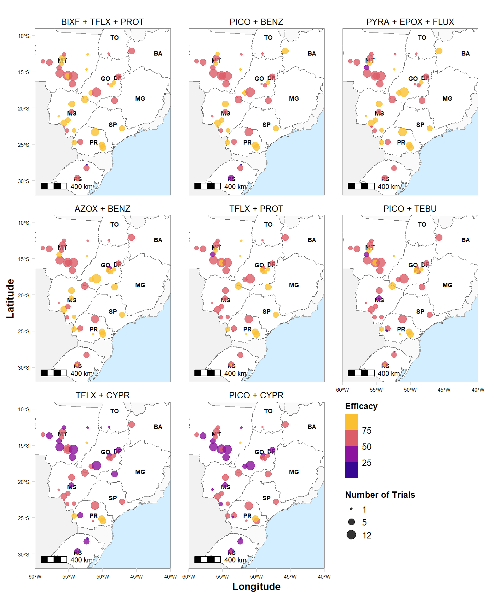
# hist(map$vi_sev)
ggsave("Figures/map.png", height=10, width=8, dpi = 600)## Scale on map varies by more than 10%, scale bar may be inaccurate
## Scale on map varies by more than 10%, scale bar may be inaccurate
## Scale on map varies by more than 10%, scale bar may be inaccurate
## Scale on map varies by more than 10%, scale bar may be inaccurate
## Scale on map varies by more than 10%, scale bar may be inaccurate
## Scale on map varies by more than 10%, scale bar may be inaccurate
## Scale on map varies by more than 10%, scale bar may be inaccurate
## Scale on map varies by more than 10%, scale bar may be inaccuratelibrary(janitor)
library(gsheet)
coord <- gsheet2tbl("https://docs.google.com/spreadsheets/d/1Xx_gK6ERLLhQGIrOPB_ZYs9LoHTmsv030s30Dc_TPzg/edit#gid=1130774788", sheetid = "map")
library(tidyverse)
rust_sev <- read_csv("data/dat-sev.csv")##
## -- Column specification --------------------------------------------------------
## cols(
## study = col_double(),
## year = col_double(),
## location = col_character(),
## state = col_character(),
## n_spray = col_double(),
## brand_name = col_character(),
## mean_sev = col_double(),
## mean_yld = col_double(),
## v_sev = col_double(),
## v_yld = col_double(),
## yld_check = col_double(),
## v_yld_check = col_double(),
## sev_check = col_double(),
## v_sev_check = col_double(),
## log_sev = col_double(),
## vi_sev = col_double(),
## n2 = col_double(),
## n3 = col_double(),
## design = col_double()
## )rust_trial <- gsheet2tbl("https://docs.google.com/spreadsheets/d/1Xx_gK6ERLLhQGIrOPB_ZYs9LoHTmsv030s30Dc_TPzg/edit#gid=287066174", sheetid = "2015-2020")
trial_n = rust_trial %>%
group_by(study,location) %>%
summarise() %>%
tabyl(location)## `summarise()` regrouping output by 'study' (override with `.groups` argument)trial_n = data.frame(trial_n) %>%
select(1,2)
map2 = full_join(coord, trial_n, by = c("location"))
map2library(rnaturalearth)
library(ggplot2)
library(ggmap)
library(ggspatial)
library(viridis)
SUL = ne_states(
country = c("Argentina", "Uruguay", "Paraguay", "Colombia", "Bolivia"),
returnclass = "sf")
br_sf <- ne_states(geounit = "brazil",
returnclass = "sf")
states <- filter(br_sf,
name_pt == "Rio Grande do Sul"|
name_pt == "Paraná"|
name_pt == "São Paulo"|
name_pt == "Mato Grosso"|
name_pt == "Mato Grosso do Sul"|
name_pt == "Goiás"|
name_pt == "Tocantins"|
name_pt == "Bahia"|
name_pt == "Minas Gerais"|
name_pt == "Distrito Federal")
states = states %>%
mutate(id = case_when(
name_pt == "Rio Grande do Sul" ~ "RS",
name_pt == "Paraná" ~ "PR",
name_pt == "São Paulo" ~ "SP",
name_pt == "Mato Grosso" ~ "MT",
name_pt == "Mato Grosso do Sul" ~ "MS",
name_pt == "Goiás" ~ "GO",
name_pt == "Tocantins" ~ "TO",
name_pt == "Minas Gerais" ~ "MG",
name_pt == "Distrito Federal" ~ "DF",
name_pt == "Bahia" ~ "BA"))
map2 %>%
ggplot()+
geom_sf(data = SUL, fill = "gray95", color = "gray95") +
geom_sf(data = br_sf, fill = "gray98", color= "gray60", size =0.2) +
geom_sf(data = states, aes(x = longitude, y = latitude), fill = "white", color = "gray40", size = 0.2) +
geom_text(data = states, aes(x = longitude, y = latitude, label = id), size = 2.5, hjust = 0.5, color = "black", fontface = "bold")+
geom_jitter(data = map2, aes(x = long, y = lat, size = n), color = "red" , alpha = .6) +
labs(x = "Longitude", y = "Latitude", size = "Number of Trials") +
scale_size_continuous(range = c(1,5), breaks = c(1,5,12))+
theme_minimal_grid()+
annotation_scale(location = "bl", width_hint = 0.2) +
coord_sf(xlim = c(-60,-40), ylim = c(-32, -6), expand = FALSE)+
theme(legend.position = "bottom",
legend.justification = "center",
legend.title.align = 0.5,
legend.title = element_text(size = 10, face = "bold"),
legend.text = element_text(size = 10),
axis.text.x = element_text(size = 6),
axis.text.y = element_text(size = 6),
axis.title.x = element_text(size=12, face = "bold"),
axis.title.y = element_text(size=12, face = "bold"),
panel.grid = element_blank(),
panel.border = element_rect(color = "gray50", size=.2),
panel.spacing.x = unit(1.5, "lines"),
panel.background = element_rect(fill = "#d2eeff")
)## Scale on map varies by more than 10%, scale bar may be inaccurate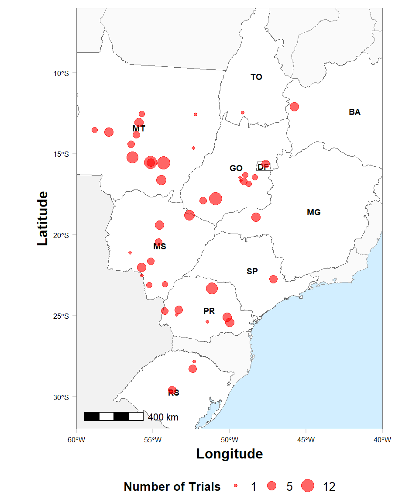
ggsave("Figures/cover_map.png", height=6, width=5, dpi = 600)## Scale on map varies by more than 10%, scale bar may be inaccurate